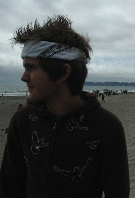

Originally from New England, Matt was lured out to the West Coast for his undergrad at UC Berkeley. He's been working in an old SF firehouse ever since doing brand strategy for clients like the Mozilla Foundation. He's an absolute beer nerd and loves dreaming up new business ideas.